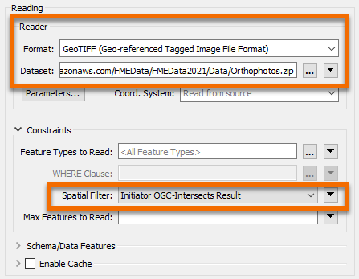
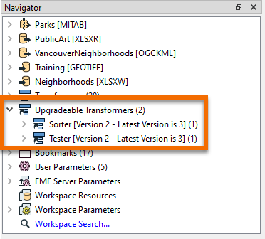
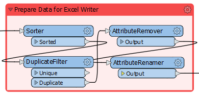
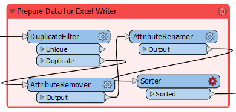
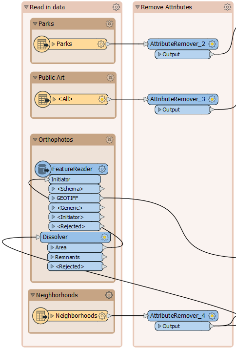
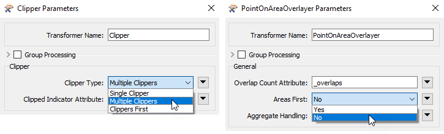

After completing this unit, you’ll be able to:
The provincial government has given the city a grant to fund new public art in parks.
Your colleague has created a workspace to analyze the amount of art in each city park, and we are carrying out a code review to ensure that the workspace is efficient and well-designed. In another exercise, we inspected the workspace to see what it produced, deconstructed the log file, and ran the workspace multiple times to assess the relative performance of each component.
In this exercise, we'll make some specific changes to improve performance.
Open the starting workspace in FME Workbench 2021.0. Turn on feature caching (we're back in authoring mode now) and run the workspace.
First, let's first check if the readers are well-designed and don't read any excess data.
To check the orthophoto coverage, start the FME Data Inspector (it will be easier than the Visual Preview window). Select File > Open Dataset and set the files to open as follows:
| Reader Format | GeoTIFF (Geo-referenced Tagged Image File Format) |
| Reader Dataset | https://s3.amazonaws.com/FMEData/FMEData2021/Data/Orthophotos.zip |
| Parameters | Feature Type Name(s): From File Name(s) |
The Feature Type Name(s) parameter makes sure the Data Inspector lists files by name.
Now select File > Add Dataset and set that dialog up as follows:
| Reader Format | Google KML |
| Reader Dataset | https://s3.amazonaws.com/FMEData/FMEData2021/Data/Boundaries/VancouverNeighborhoods.kml |
Now you can check whether any GeoTIFF tiles fall outside the extents of the neighborhoods. Because some orthophotos do not overlap the neighborhood boundaries, our workspace is reading more orthophotos than is necessary.
It appears that there are GeoTIFF files being read unnecessarily. This causes a performance hit, especially when feature caching is turned on. We could just select the files we want to read, but if the neighborhoods dataset changed, then this list might not be correct.
So, instead, delete the GeoTIFF format reader from the workspace. Add a FeatureReader transformer in its place. Make the reprojected Neighborhoods data the Initiator (create a separate connection):

Open the FeatureReader parameters. Set the Format to GeoTIFF and set https://s3.amazonaws.com/FMEData/FMEData2021/Data/Orthophotos.zip as the Dataset. Set the Spatial Filter parameter to Initiator OGC-Intersects Result:

Close the dialog and the FeatureReader now has a GeoTIFF output port. Connect this to the RasterMosaicker:

If we run the workspace now the FeatureReader outputs 48 features. This is more than we had before (40) and occurs because GeoTIFF tiles that overlap two neighborhoods are being read twice.
So add a Dissolver transformer between Reprojector_2 and FeatureReader. This will consolidate the neighborhoods into a single feature and ensure each GeoTIFF is only read once. Re-run the workspace:

Now we only read 27 features, which is the correct amount. We are reading fewer photos and so the workspace is performing better.
The simplest writer improvement we might make is to change the order of the writers. Currently, the Excel spreadsheet is being written first. This means that GeoTIFF files - which are large in size - are being cached, instead of the smaller Excel file.
So, adjust the order of the writers, so that the GeoTIFF writer comes first in the Navigator:

Re-run the workspace. Although the workspace wasn't really slow to start with, you should notice it now runs slightly faster, using less memory.
Now let's look into transformers. This is where there are a lot of different changes we can make. The first is to check for old transformer versions. Notice in the Navigator window that two transformers are listed as "Upgradeable":

In turn, right-click each entry and choose to Upgrade Transformer. You will be prompted with a warning that you can ignore, and even choose to skip in the future.
A dialog will open to show the changes in GUI to the transformer, and you can click the Show Changes button to get a written list of changes:

Upgrading transformers doesn't always make them operate faster - some changes are either functional or cosmetic - and it might make their results slightly different. Therefore, it's not advisable to upgrade all transformers without first checking what the upgrade involves.
However, in this case, both transformers should be safe to upgrade, and they both may even get an improved performance from the upgrade. So go ahead and upgrade both transformers.
Look at the bookmark labeled Prepare Data for Excel Writer:

Inspect the transformers and you will see that data is sorted into order for writing, then unnecessary features are filtered out and unnecessary attributes removed.
This is not the correct order to maximize performance: unnecessary features with unnecessary attributes are being processed by the sorting action. Remember, the key order is Filter-Remove-Action.
So, move the Sorter transformer after the AttributeRenamer:

Notice that the Sorter transformer is now flagged as incomplete. Inspect the parameters and you'll notice that the attribute _overlaps no longer exists; it was renamed by the AttributeRenamer to ArtWorks.
So simply change the Sorter to sort by ArtWorks and the transformer will work again.
The other thing to consider is whether data can be filtered or removed earlier in the workspace. The two filtering transformers in this workspace are the Tester and DuplicateFilter. Can we move these to earlier in the workspace? Can the Tester transformer be moved? Note your answer: you'll need it for the quiz.
Can the AttributeRemover and AttributeRenamer transformers be moved? Well, the AttributeRenamer can't be moved because it renames the _overlaps attribute, an action that can only happen here. However, removing attributes could be carried out much earlier.
The simplest technique is to add an AttributeRemover after every reader whose attributes can be removed:

So, remove the existing AttributeRemover and add an AttributeRemover to each input that can be cleaned, and remove whatever attributes are not necessary to the workspace. You can tell if you remove a necessary attribute if a transformer (or writer feature type) further on in the stream is flagged as incomplete.
Now we have removed all unnecessary attributes from the workspace, as soon as possible.
As mentioned, a number of transformers have parameters specifically for performance benefits. These are often labeled as Group By Mode or <Features First>
Check the transformers in this workspace. The two of particular interest are the Clipper and PointOnAreaOverlayer. Both of them have a Group Processing and a Features First parameter:

The Group Processing parameter doesn't apply, because neither transformer is using a Group By. However, the Clippers First and Areas First options are of interest. If we set these options we can get a performance boost, but we do have to confirm that either Clippers or Areas are the first features to arrive.
In the PointOnAreaOverlayer, change the Areas First parameter to Yes. Re-run the workspace (either turn off caching or use re-run the entire workspace). Notice that all Area features exit as <Rejected> features. They are rejected because they are not first!

One reason might be that the MapInfo park features are being read after the Excel records. So, in the Navigator window move the Parks reader to the top of the list:

Re-run the workspace. Notice that the park features are now first. This part of the workspace should be working more efficiently now.
Try the same action on the Clipper transformer, to see if Clipper features are first so that the Clipper Type parameter can be set to Clippers First.
With Feature Caching off, re-run the entire workspace. Check if the log results show that the workspace is quicker and more memory efficient than it was before. The code review of your colleague's workspace is complete.